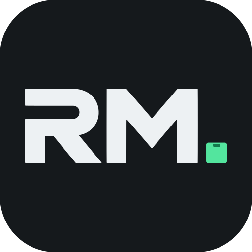
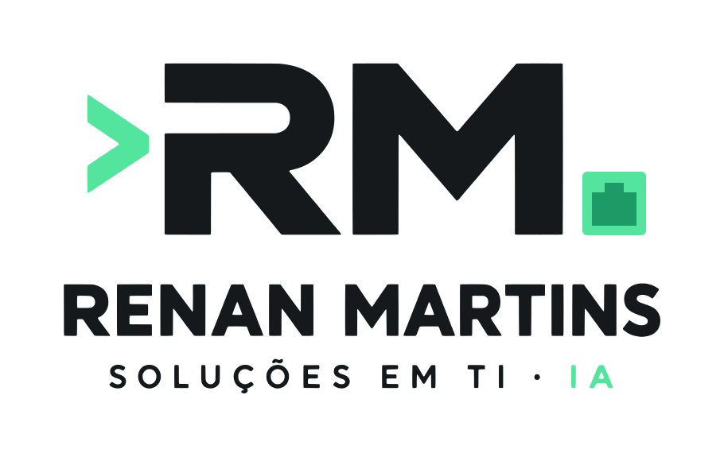
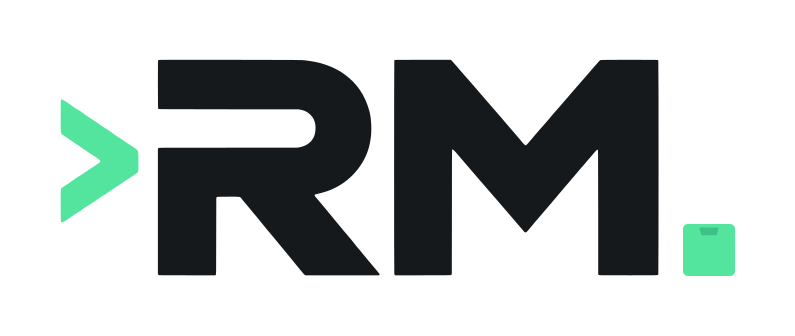

Vetorização fiel da imagem aprovada pelo Renan: os contornos do R, do M, do ">" e das letras são os da imagem, em SVG (escala sem perder qualidade). O retângulo foi trocado por um quadrado verde com a forma de uma porta Ethernet (encaixe em verde mais escuro, #1E9A66). Cores: tinta #15191C e menta #53E59E.




